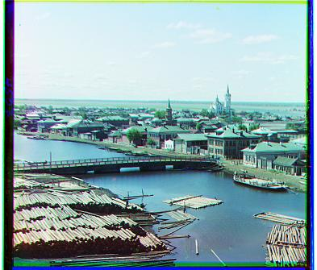
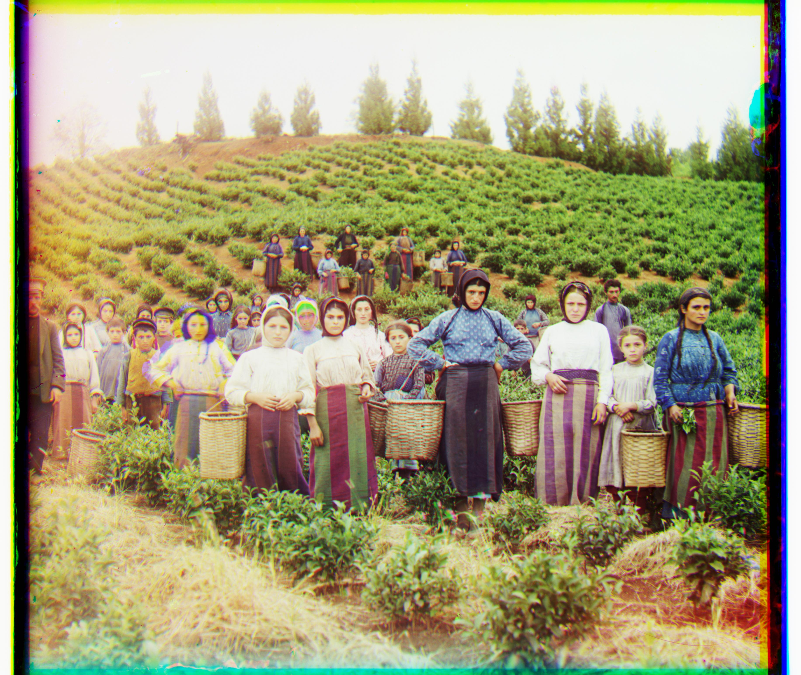
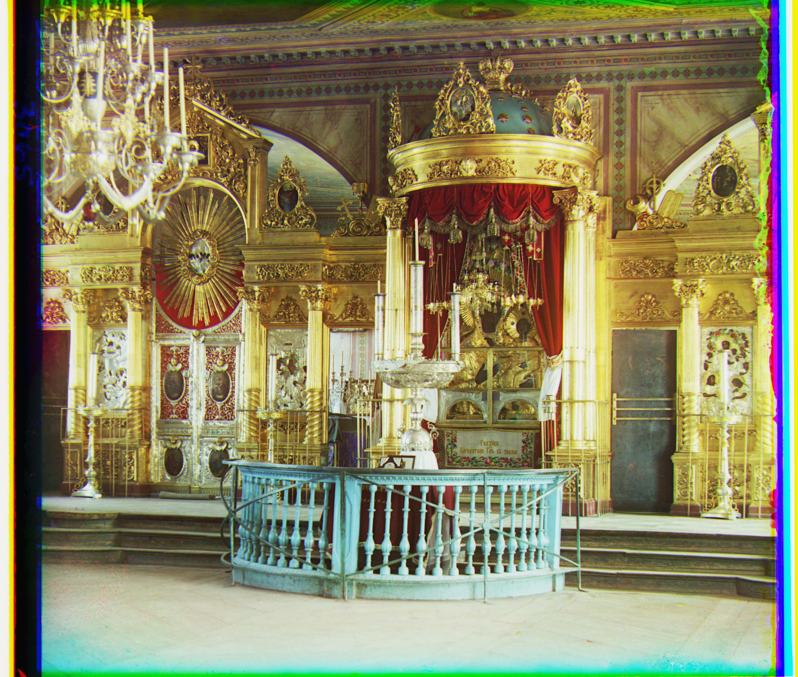
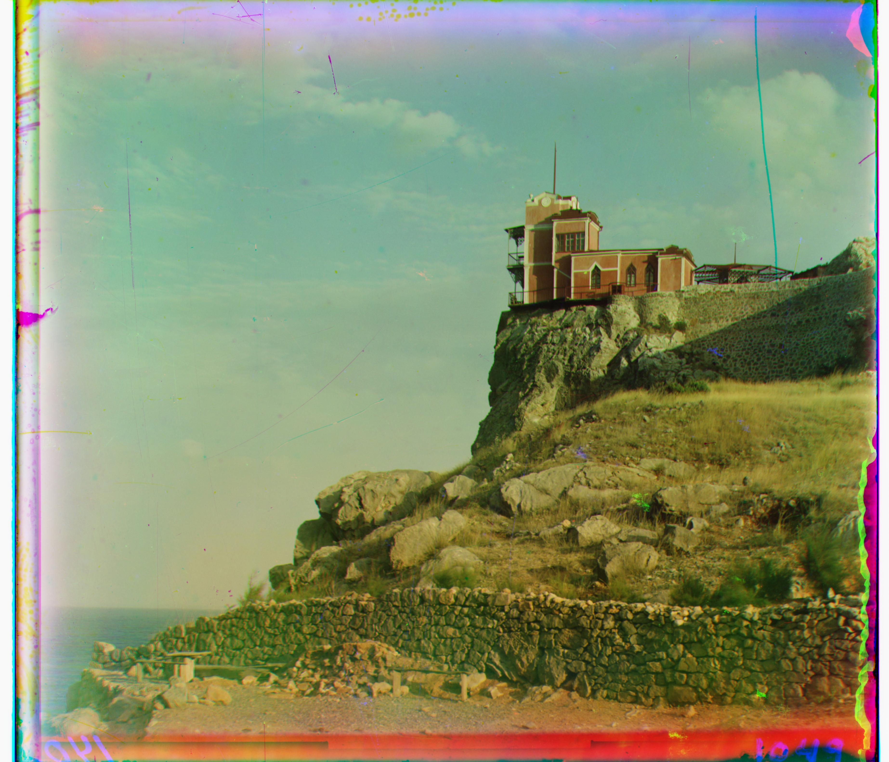
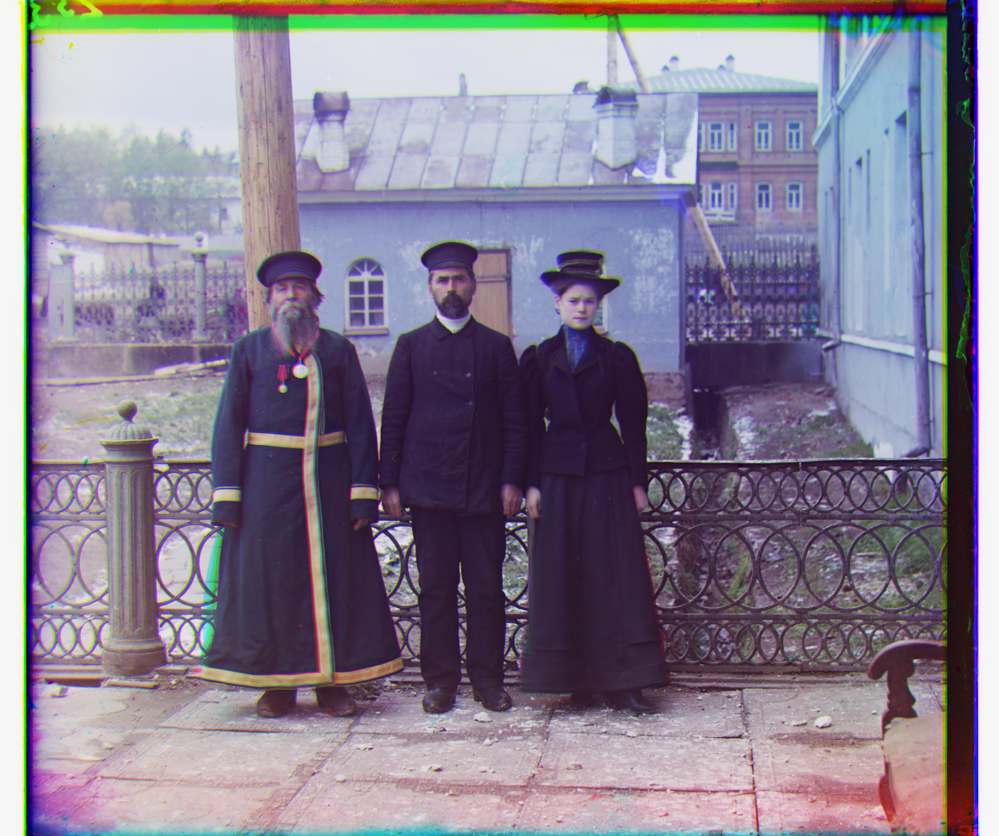
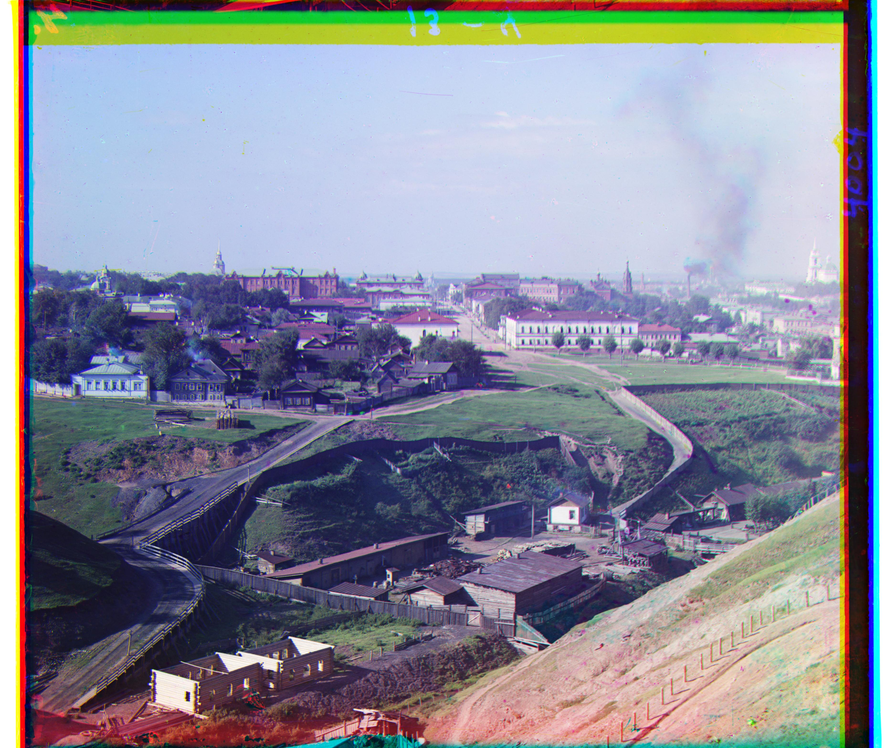
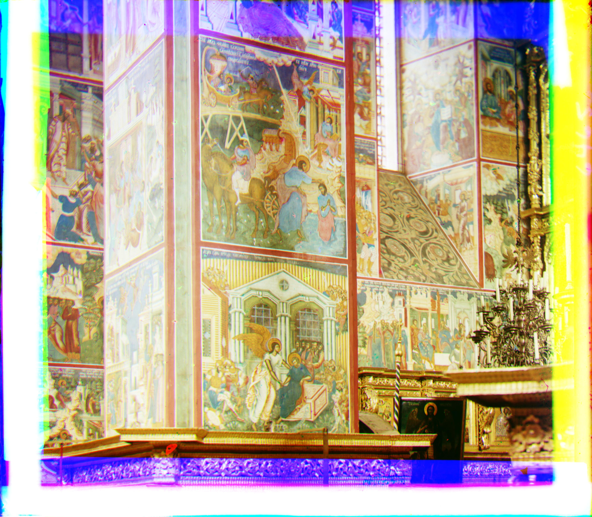

I started working off of the provided starter code, which split the source images into
blue, green, and red channels based on their vertical positions on the image. For the green
and red channels, I tried aligning them to the blue channel by testing over a window of
possible displacements that was [-30, 30] in both the horizontal and vertical directions.
My algorithm exhaustively searched all 61 x 61 possible displacements in this window,
and chose the displacement with the highest similarity among RGB values.
After the red and green channels are aligned, the three channels are cropped to their
shared area.
For comparing similarity, I used the Normalized Cross-Correlation, and implemented the
translations by cropping by the source and reference images to their shared areas,
instead of calling np.roll on the source image. Normalized Cross-Correlation is only
computed for pixels in the 10th to 90th percentiles on both axes. In other words,
I cropped out 10% of the pixels on the four edges to avoid having the borders
influence NCC calculations.
Formally, the NCC metric I used was the sum over all values in the pointwise product
of the two image matrices, then dividing it by the Frobenius norms of the two matrices.
Normalizing is particularly relevant in my approach because cropping (instead
of rolling) images means that
larger translations result in smaller matrices, which tend to have smaller norms.
The results of this algorithm on small images is shown below. Note that the green
and red channel offsets refer to the displacement of those channels relative to
the blue channel. An offset of (a, b) refers to displacing that channel by
a pixels vertically and b pixels horizontally.
| Image | Green Channel Offset | Red Channel Offset |
| (5, 2) | (12, 3) | |
|
(-3, 2) | (3, 2) |
|  | (3, 3) | (6, 3) |
While single scale alignment works sufficiently for smaller images, it is too inefficient
for exhaustively searching large images. The true displacements of channels in large
image may be much larger than those of small images, since the same number of pixels is
a smaller fraction of the overall image. For instance, if a channel needed to be displaced
to the right by 10% of the width of the image, it would be displaced by 10 pixels in an
image with a width of 100 pixels, but 100 pixels on an image with a width of 1000 pixels.
To avoid exhaustively searching a signficantly larger window of displacements, I used an
image pyramid to reduce the number of displacements that need to be considered. The image
is first iteratively downsampled by factors of 2 (with anti-aliasing) with the
sk.transorm.rescale function until the image is at most 600 pixels in both the
horizontal and vertical dimensions. On this image, the previous window of [-30, 30]
is used to find the displacement with highest similarity.
In each subsequent (less-downsampled) layer, my algorithm searches the 2x2 window that
represents the best displacement found on the previous iteration. The window is 2x2
since the downsampling was done with a factor of 2, so after upscaling, each pixel is
split into 4.
The results of using the pyramid algorithm on the other example images, as well
as 3 additional images I downloaded from the Library of Congress, are shown below. The
results of this procedure on the smaller images is ommitted from this section since those
images already begin with dimensions less than 600 pixels on each side, meaning the pyramid
algorithm is identical to the single-scale alignment. The images are downsized to fit on
the webpage, but you may open the images in a new tab to see them at full scale.
| Image | Green Channel Offset | Red Channel Offset |
| (25, 4) | (60, -4) | |
 |
(50, 24) | (103, 56) |
|  | (60, 18) | (128, 16) |
|  | (44, 17) | (92, 24) |
 |
(40, 24) | (80, 36) |
|  | (0, 0) | (76, -8) |
| (41, -16) | (96, -28) | |
| (80, 10) | (180, 16) | |
| (80, 32) | (178, 40) | |
 |
(49, -6) | (96, -24) |
|  | (56, 16) | (114, 12) |
| (12, 20) | (65, 15) | |
| (54, 16) | (122, -6) | |
|  | (58, 10) | (128, 24) |
The search with NCC using the pyramid algorithm appears to have worked reasonably well
for most images above. Notably, multiple images had offsets of around 180 for one channel
in one direction (like self portrait and melons), which would be difficult to
search for through brute force. I had previously had trouble aligning these images
because the window of displacements I searched over was too small ([-15, 15]).
The image it aligned poorly is the one with the emir, the second
image on the table above. This may be a shortcoming of directly comparing RGB values.
From the original scans, it is clear that the emir's clothing has much higher intensity
in the blue channel compared to the red channel, so those channels are not very similar
by many similarity metrics. A fix for this will be discussed in the Bells and Whistles.
These are optional components of the project, but I implemented some to improve image quality.
I noticed that many of the borders in the images are straight, and either black
or white. Thus, I wrote a simple algorithm to detect some of these edges so they
can be truncated. More formally, the average intensities along each row and column of
each channel (after being converted to floats in [0.0, 1.0]) are taken. Rows and columns
with an average intensity below 8.0/256.0 are considered very low intensity,
and those with an average intensity above 248.0/256.0 are considered to have
very high intensity. Among the rows and columns with very low or high intensity, my
algorithm finds the two consecutive rows or columns that have the greatest distance in
terms of their positions and crops them.
For instance, if rows [0, 1, 3, 5, 100, 103] are detected
to have very high or low intensity, the image is cropped to rows 6 to 99, inclusive.
Since this is done for each channel, the common area among the channels is found, and
each channel is cropped to this common area (to keep them the same shape).
A sample crop is shown below. This is the result of cropping the blue channel
for the cathedral picture, and after
all channels are cropped to common area. The image before cropping
is on the left, and the image after cropping is on the right. The right black border
been cropped slightly. White borders have also been cropped, which
are more noticeable on color images (since white doesn't show up
on this webpage).
While this cropping algorithm does not crop all borders, it is able to crop some borders, without cropping any relevant parts of the photos.
I had initially tried automatic contrasting by scaling all pixel values
according to the linear function that maps the darkest pixel on the darkest channel
to 0.0, and the brightest pixel on the brightest channel to 1.0. Formally, the
linear function to do this is to subtract the darkest pixel's intensity from all
pixels, then divide all pixels by the brightest pixel's value. However, I found that
the darkest pixel was often close to 0.0 (on its darkest channel)
and the brightest pixel (on its brightest channel) was often close to 1.0, so this
function did little to the image, even when only searching the interior of the
image for the darkest and brightest pixel.
A similar, but more drastic change came when I tried automatic color balancing. I
chose the "brightest" and "darkest" pixels in the interior of the image based on
which had the highest or lowest sum of intensities among its three channels. Then,
for each channel, I would subtract the "darkest" pixel's intensities from each channel
to set to pixel to black, then divide by the "brightest" pixel's intensities to
set that pixel to white. This is done similarly to the contrasting algorithm, but
is done per channel. Since this can induce values outside the range of [0.0, 1.0],
I rounded negative values to 0.0 and values above 1.0 to 1.0.
This resulted in more significant changes of some of the images that had poor lighting.
For instance, the lastochikino image changed significantly after color balancing,
as shown below. The original image is on the left, and the color-balanced one
is on the right.
| Image | Green Channel Offset | Red Channel Offset |
| (5, 2) | (12, 3) | |
| (-3, 2) | (3, 2) | |
| (3, 3) | (6, 3) | |
| (26, 8) | (60, -4) | |
| (50, 24) | (108, 40) | |
| (60, 18) | (128, 16) | |
| (44, 17) | (92, 24) | |
| (40, 24) | (80, 36) | |
| (0, 0) | (76, -8) | |
| (41, -16) | (96, -28) | |
| (80, 10) | (180, 12) | |
| (80, 32) | (178, 40) | |
| (50, -6) | (96, -24) | |
| (56, 16) | (113, 12) | |
|  | (12, 20) | (65, 16) |
 |
(54, 16) | (122, -6) |
| (57, 10) | (128, 24) |